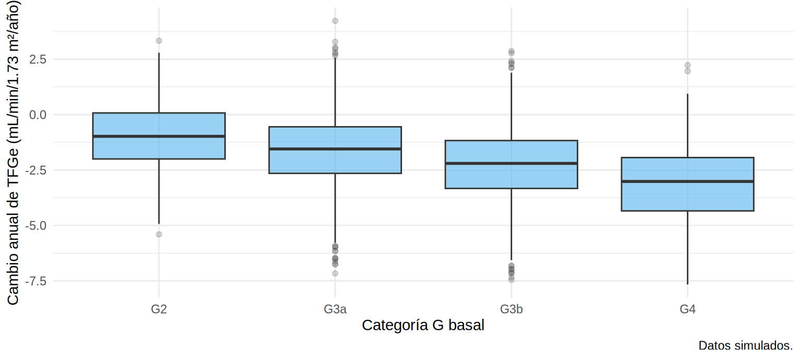
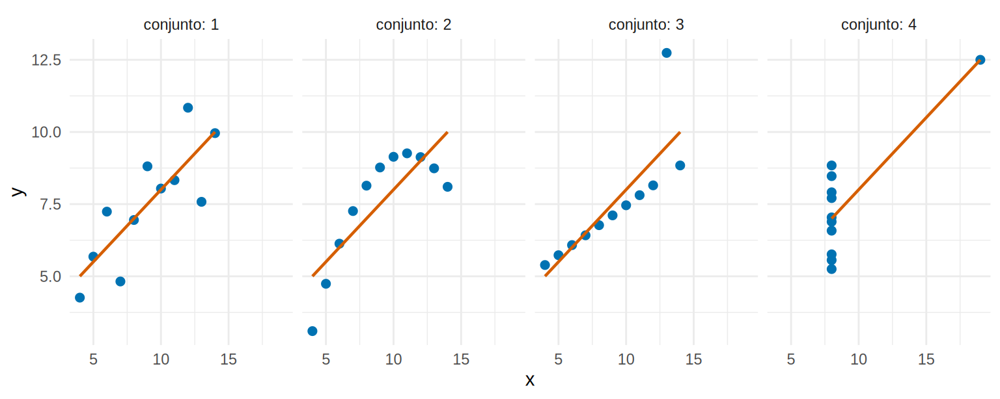
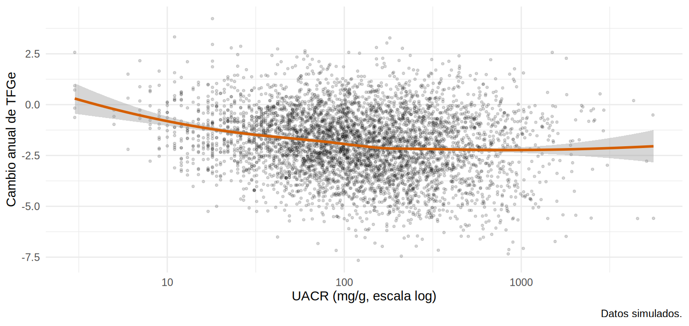

library(tidyverse)
library(broom)
source("R/funciones_epi.R")
ckd <- read_csv("Bases/ckd_isglt2.csv", show_col_types = FALSE) |>
mutate(
trat = factor(isglt2, levels = 0:1, labels = c("Sin iSGLT2", "Con iSGLT2")),
sexo = factor(sexo, levels = c("Mujer", "Hombre")),
cat_g = categoria_g(tfg_basal), cat_a = categoria_a(uacr)
)Dos variables: pruebas de hipótesis y correlación
Nota🩺 Escenario
Tu tutor te lanza cinco preguntas en el pasillo: ¿los tratados con iSGLT2 tienen distinta TFGe basal que los no tratados? ¿La ECV previa se asocia con recibir el fármaco? ¿La pérdida anual de TFGe cambia según la categoría G? ¿Cuánto se relacionan la edad y la TFGe? ¿Subió la creatinina entre la basal y los 12 meses en los mismos pacientes? Cinco preguntas, cinco pruebas distintas. Aprender a elegir entre ellas es todo este subcapítulo.
Lo que vamos a hacer
- Elegir la prueba según tipo de variable y diseño (grupos independientes o pareados).
- Leer, línea por línea, la salida de
t.test(),chisq.test(),aov()ycor.test(). - Corregir las comparaciones múltiples y recordar qué no dicen los valores p.
Paso 1. ¿Qué prueba uso?
Hazte tres preguntas, en este orden: (1) ¿de qué tipo es el desenlace (continuo o categórico)?, (2) ¿cuántos grupos comparo?, (3) ¿los grupos son independientes o son los mismos pacientes medidos dos veces?
| Variable resultado | Variable que se compara | Prueba paramétrica | Alternativa no paramétrica |
|---|---|---|---|
| Continua | 2 grupos independientes | t de Welch | Wilcoxon-Mann-Whitney |
| Continua | 2 mediciones del mismo paciente | t pareada | Wilcoxon de rangos con signo |
| Continua | ≥ 3 grupos | ANOVA | Kruskal-Wallis |
| Categórica | Categórica | χ² de Pearson | Fisher (frecuencias esperadas < 5) |
| Binaria pareada | Antes/después | — | McNemar |
| Continua | Continua | Correlación de Pearson | Correlación de Spearman |
Cargamos la base de siempre (simulada) y preparamos las variables:
Paso 2. Comparar una variable continua entre dos grupos
Prueba t de Welch
¿La TFGe basal es distinta entre tratados y no tratados?
t.test(tfg_basal ~ trat, data = ckd)
Welch Two Sample t-test
data: tfg_basal by trat
t = -15.427, df = 4892.9, p-value < 2.2e-16
alternative hypothesis: true difference in means between group Sin iSGLT2 and group Con iSGLT2 is not equal to 0
95 percent confidence interval:
-4.558025 -3.530155
sample estimates:
mean in group Sin iSGLT2 mean in group Con iSGLT2
44.05004 48.09413 Cómo se lee esta salida, de arriba abajo:
Welch Two Sample t-test: es la versión de la t que no exige varianzas iguales entre grupos. Úsala siempre como opción por defecto; si las varianzas fueran iguales, da prácticamente lo mismo.t = -15.4, df = 4893, p-value < 2.2e-16: el estadístico t mide cuántos errores estándar separan las medias;dfson los grados de libertad. El p es diminuto (con n = 5 000 casi todo lo es).95 percent confidence interval: la diferencia de medias (Sin − Con) va de -4.56 a -3.53. Esto es lo informativo: tamaño y precisión.sample estimates: las medias de cada grupo (44.1 y 48.1). Los tratados tienen una TFGe basal unos 4 mL/min/1.73 m² mayor, hallazgo que ya vimos en la Tabla 1.
broom::tidy() convierte el resultado de cualquier prueba en una tabla ordenada (útil para reportar o para repetir la prueba en muchas variables):
tidy(t.test(tfg_basal ~ trat, data = ckd)) |>
transmute(diferencia = estimate1 - estimate2, ic_inf = conf.low, ic_sup = conf.high, p = p.value) |>
mutate(across(where(is.numeric), \(x) signif(x, 3)))# A tibble: 1 × 4
diferencia ic_inf ic_sup p
<dbl> <dbl> <dbl> <dbl>
1 -4.04 -4.56 -3.53 1.83e-52Wilcoxon cuando la variable es asimétrica
La UACR es muy asimétrica (Cap. 7.1), así que la prueba natural es la de Wilcoxon-Mann-Whitney, que trabaja con rangos y no con medias:
wilcox.test(uacr ~ trat, data = ckd, conf.int = TRUE)
Wilcoxon rank sum test with continuity correction
data: uacr by trat
W = 2367492, p-value < 2.2e-16
alternative hypothesis: true location shift is not equal to 0
95 percent confidence interval:
-49.99997 -37.00004
sample estimates:
difference in location
-43.99996 Cómo se lee. El p es diminuto otra vez. El “difference in location” (≈ −44 mg/g) es el pseudomediano de las diferencias (Hodges-Lehmann), no la diferencia de medianas. Para reportar, acompaña el p con las medianas [RIC] de cada grupo (Tabla 1). Una precisión: Wilcoxon compara medianas solo si las dos distribuciones tienen la misma forma; en general compara “quién tiende a tener valores mayores”.
¿t o Wilcoxon? Con n grande (≥ 30 por grupo) la t es robusta incluso con asimetría moderada. Con n pequeño y asimetría clara (UACR, triglicéridos) o valores atípicos, usa Wilcoxon, o transforma con logaritmo y usa t sobre log(uacr) (el resultado se interpreta como razón de medias geométricas).
Paso 3. Dos variables categóricas: χ² y Fisher
¿Está la ECV previa asociada con recibir iSGLT2? Primero la tabla de contingencia con los porcentajes por fila (¿qué % de cada grupo tiene ECV?) y luego la prueba:
tabla <- table(ckd$trat, ckd$ecv)
dimnames(tabla) <- list(trat = c("Sin iSGLT2", "Con iSGLT2"), ECV = c("Sin ECV", "Con ECV"))
tabla ECV
trat Sin ECV Con ECV
Sin iSGLT2 1903 747
Con iSGLT2 1730 620round(100 * prop.table(tabla, margin = 1), 1) # % por fila ECV
trat Sin ECV Con ECV
Sin iSGLT2 71.8 28.2
Con iSGLT2 73.6 26.4chisq.test(tabla, correct = FALSE)
Pearson's Chi-squared test
data: tabla
X-squared = 2.0443, df = 1, p-value = 0.1528Cómo se lee. El X-squared compara lo observado con lo que se esperaría si no hubiera asociación; aquí p = 0.15: no hay evidencia de asociación (28.2 % frente a 26.4 % de ECV). Para saber si la prueba es confiable, revisa las frecuencias esperadas; la regla clásica es que ninguna (o a lo sumo el 20 % de las celdas) sea menor que 5:
chisq.test(tabla)$expected # todas muy por encima de 5 ECV
trat Sin ECV Con ECV
Sin iSGLT2 1925.49 724.51
Con iSGLT2 1707.51 642.49Cuando las esperadas son pequeñas hay que usar la prueba exacta de Fisher. Un ejemplo típico: un subgrupo pequeño. Tomemos los pacientes G2 con A1 (los de menor riesgo, solo 44 en total) y miremos si el evento renal depende del tratamiento:
sub <- ckd |> filter(cat_g == "G2", cat_a == "A1")
tb_sub <- table(trat = sub$trat, evento = sub$evento)
tb_sub evento
trat 0 1
Sin iSGLT2 16 2
Con iSGLT2 26 0suppressWarnings(chisq.test(tb_sub)$expected) # hay esperadas < 5: el χ² no es fiable evento
trat 0 1
Sin iSGLT2 17.18182 0.8181818
Con iSGLT2 24.81818 1.1818182fisher.test(tb_sub)
Fisher's Exact Test for Count Data
data: tb_sub
p-value = 0.1617
alternative hypothesis: true odds ratio is not equal to 1
95 percent confidence interval:
0.000000 3.624888
sample estimates:
odds ratio
0 Con una esperada de 0.8 y otra de 1.2, el χ² no es confiable (R mismo lo advierte). Fisher da p = 0.16: en este subgrupo hay muy pocos eventos para concluir nada (0 eventos entre 26 tratados, 2 entre 18 no tratados). Es el caso de “sin potencia”, no de “sin efecto”.
Paso 4. Tres o más grupos: ANOVA y Kruskal-Wallis
¿La pendiente anual de TFGe difiere según la categoría G basal? Siempre dibuja antes de probar:
ggplot(ckd, aes(cat_g, pendiente_tfg)) +
geom_boxplot(fill = "#56B4E9", alpha = 0.6, outlier.alpha = 0.2) +
labs(x = "Categoría G basal", y = "Cambio anual de TFGe (mL/min/1.73 m²/año)",
caption = "Datos simulados.") +
theme_minimal(base_size = 11)
m_aov <- aov(pendiente_tfg ~ cat_g, data = ckd)
summary(m_aov) Df Sum Sq Mean Sq F value Pr(>F)
cat_g 3 1055 351.8 140.1 <2e-16 ***
Residuals 4996 12543 2.5
---
Signif. codes: 0 '***' 0.001 '**' 0.01 '*' 0.05 '.' 0.1 ' ' 1kruskal.test(pendiente_tfg ~ cat_g, data = ckd)
Kruskal-Wallis rank sum test
data: pendiente_tfg by cat_g
Kruskal-Wallis chi-squared = 373.2, df = 3, p-value < 2.2e-16Cómo se lee la tabla del ANOVA. cat_g tiene 3 grados de libertad (4 categorías − 1); F value compara la variación entre categorías con la variación dentro de ellas; el Pr(>F) es el p. Aquí F = 140: la pendiente cambia con la categoría G (más negativa en G4). Kruskal-Wallis, la versión no paramétrica, confirma. Si las varianzas entre grupos fueran muy distintas, oneway.test(pendiente_tfg ~ cat_g, data = ckd) aplica la corrección de Welch al ANOVA.
El ANOVA solo dice que hay alguna diferencia. Para saber cuáles categorías difieren se hacen comparaciones por pares con corrección:
TukeyHSD(m_aov) Tukey multiple comparisons of means
95% family-wise confidence level
Fit: aov(formula = pendiente_tfg ~ cat_g, data = ckd)
$cat_g
diff lwr upr p adj
G3a-G2 -0.6709785 -0.9061896 -0.4357673 0
G3b-G2 -1.3137810 -1.5512343 -1.0763276 0
G4-G2 -2.0941725 -2.4459013 -1.7424438 0
G3b-G3a -0.6428025 -0.7653715 -0.5202335 0
G4-G3a -1.4231941 -1.7101648 -1.1362233 0
G4-G3b -0.7803916 -1.0692029 -0.4915803 0pairwise.wilcox.test(ckd$pendiente_tfg, ckd$cat_g, p.adjust.method = "holm")
Pairwise comparisons using Wilcoxon rank sum test with continuity correction
data: ckd$pendiente_tfg and ckd$cat_g
G2 G3a G3b
G3a 4.5e-12 - -
G3b < 2e-16 < 2e-16 -
G4 < 2e-16 < 2e-16 3.8e-11
P value adjustment method: holm Cada fila de Tukey es una pareja (p. ej., G4-G3b): diff es la diferencia de medias de la pendiente, lwr/upr su IC ajustado y p adj el p ajustado. Todas las parejas difieren; por ejemplo, G4 pierde 0.8 mL/min/1.73 m² más por año que G3b.
Paso 5. Comparaciones múltiples
Si pruebas 20 hipótesis con α = 0.05, esperas una falsa “significativa” aunque no haya nada real (la probabilidad de al menos un falso positivo ronda el 64 %). Opciones de corrección:
- Bonferroni: multiplica cada p por el número de pruebas (conservador).
- Holm: igual de válido y más potente; es el predeterminado razonable (
p.adjust(p, method = "holm")). - FDR (Benjamini-Hochberg): controla la proporción esperada de falsos descubrimientos; para análisis exploratorios con muchas pruebas.
p_vals <- c(0.001, 0.012, 0.034, 0.048, 0.20)
tibble(p = p_vals, bonferroni = p.adjust(p_vals, "bonferroni"),
holm = p.adjust(p_vals, "holm"), fdr = p.adjust(p_vals, "BH")) |> mutate(across(everything(), \(x) round(x, 3)))# A tibble: 5 × 4
p bonferroni holm fdr
<dbl> <dbl> <dbl> <dbl>
1 0.001 0.005 0.005 0.005
2 0.012 0.06 0.048 0.03
3 0.034 0.17 0.102 0.057
4 0.048 0.24 0.102 0.06
5 0.2 1 0.2 0.2 Qué vemos. Sin ajustar hay cuatro valores bajo 0.05 (0.001, 0.012, 0.034 y 0.048). Con Bonferroni queda uno (0.005); con Holm, dos (0.005 y 0.048); con FDR, dos (0.005 y 0.030). El ajuste cambia las conclusiones, así que decide el método antes de ver los datos.
Paso 6. Correlación entre dos variables continuas
Antes de calcular un coeficiente, mira el gráfico y pregúntate cuatro cosas: la forma (¿recta, curva?), la dirección (¿sube o baja?), la dispersión (¿qué tan apretada es la nube?) y los atípicos. La razón es que un mismo coeficiente puede esconder historias muy distintas. El conjunto anscombe (viene con R) lo demuestra: cuatro pares de variables con la misma correlación de 0.82 y la misma media:
anscombe |>
pivot_longer(everything(), names_to = c(".value", "conjunto"), names_pattern = "(.)(.)") |>
ggplot(aes(x, y)) +
geom_point(color = "#0072B2", size = 2) +
geom_smooth(method = "lm", formula = y ~ x, se = FALSE, color = "#D55E00", linewidth = 0.8) +
facet_wrap(~ conjunto, nrow = 1, labeller = label_both) +
theme_minimal(base_size = 11)
Solo el primer panel es una nube lineal “normal”; en los otros hay una curva, un atípico que fabrica la recta, y un punto que domina todo. Ahora, en nuestros datos:
cor.test(ckd$edad, ckd$tfg_basal) # Pearson
Pearson's product-moment correlation
data: ckd$edad and ckd$tfg_basal
t = -23.614, df = 4998, p-value < 2.2e-16
alternative hypothesis: true correlation is not equal to 0
95 percent confidence interval:
-0.3415347 -0.2916567
sample estimates:
cor
-0.3168147 cor.test(ckd$uacr, ckd$pendiente_tfg, method = "spearman", exact = FALSE) # Spearman (UACR asimétrica)
Spearman's rank correlation rho
data: ckd$uacr and ckd$pendiente_tfg
S = 2.4141e+10, p-value < 2.2e-16
alternative hypothesis: true rho is not equal to 0
sample estimates:
rho
-0.1587678 Cómo se lee. Edad y TFGe basal: r = -0.32 (IC 95 % −0.34 a −0.29): correlación negativa y moderada (a más edad, menos TFGe). Para la UACR (asimétrica) usamos Spearman: ρ = -0.16; a mayor albuminuria, pendiente más negativa (exact = FALSE evita el aviso por empates).
ggplot(ckd, aes(uacr, pendiente_tfg)) +
geom_point(alpha = 0.15, size = 0.7) +
geom_smooth(method = "loess", formula = y ~ x, color = "#D55E00") +
scale_x_log10() +
labs(x = "UACR (mg/g, escala log)", y = "Cambio anual de TFGe",
caption = "Datos simulados.") +
theme_minimal(base_size = 11)
- Pearson mide asociación lineal; es sensible a valores extremos.
- Spearman mide asociación monótona (usa rangos); es robusta a asimetría y outliers.
- El coeficiente es adimensional (de −1 a 1): r = 0.5 no significa “50 %”; elevado al cuadrado (r²) da la fracción de varianza compartida. Aquí r² ≈ 0.1: la edad “explica” un 10 % de la variación de la TFGe.
- Correlación ≠ concordancia (si comparas dos métodos de medición, usa Bland-Altman) y ≠ causalidad.
Paso 7. Datos pareados: antes y después
lab_visitas_ancho.csv tiene la creatinina de 378 pacientes en tres visitas (simulada, Cap. 5). ¿Cambió la creatinina entre la basal y los 12 meses en los mismos pacientes? Una t para muestras independientes ignoraría el pareamiento; se usa la pareada, que analiza la diferencia dentro de cada paciente:
lab <- read_csv("Bases/lab_visitas_ancho.csv", show_col_types = FALSE)
t.test(lab$creat_12m, lab$creat_basal, paired = TRUE)
Paired t-test
data: lab$creat_12m and lab$creat_basal
t = 9.9252, df = 377, p-value < 2.2e-16
alternative hypothesis: true mean difference is not equal to 0
95 percent confidence interval:
0.1756098 0.2623796
sample estimates:
mean difference
0.2189947 wilcox.test(lab$creat_12m, lab$creat_basal, paired = TRUE)
Wilcoxon signed rank test with continuity correction
data: lab$creat_12m and lab$creat_basal
V = 54372, p-value < 2.2e-16
alternative hypothesis: true location shift is not equal to 0Cómo se lee. La creatinina subió en promedio 0.22 mg/dL (IC 0.18-0.26). La prueba pareada quita la variabilidad entre pacientes (unos tienen creatinina de 0.8 y otros de 5) y es mucho más potente. Si tus datos son pareados y usas la prueba independiente, pierdes potencia y, a veces, la conclusión.
Paso 8. Muchas variables a la vez: una tabla con una prueba por fila
En un artículo se suele presentar una tabla bivariada: columnas por grupo (del desenlace o de la exposición) y un valor p por variable. Nuestra función tabla1() (Cap. 7.2) elige la prueba por ti: t (o Wilcoxon, si la declaras en no_normales) para continuas, y χ² o Fisher para categóricas.
source("R/tabla1.R")
ckd <- ckd |> mutate(desenlace = factor(evento, levels = 0:1, labels = c("Sin evento", "Con evento")))
tabla1(ckd, vars = c("edad", "sexo", "hba1c", "tfg_basal", "uacr", "ecv"), grupo = "desenlace",
no_normales = "uacr", binarias = "ecv", dem = FALSE,
etiquetas = c(edad = "Edad, años", sexo = "Sexo", hba1c = "HbA1c, %", tfg_basal = "TFGe",
uacr = "UACR, mg/g", ecv = "ECV previa")) |>
knitr::kable(align = "lrrrrr")| Variable | Sin evento | Con evento | Total | Faltantes | p |
|---|---|---|---|---|---|
| n | 4235 | 765 | 5000 | ||
| Edad, años, media (DE) | 63.1 (10.0) | 67.7 (9.6) | 63.8 (10.0) | 0 | <0.001 |
| Sexo, n (%) | 0 | 0.501 | |||
| Mujer | 1904 (45.0%) | 354 (46.3%) | 2258 (45.2%) | ||
| Hombre | 2331 (55.0%) | 411 (53.7%) | 2742 (54.8%) | ||
| HbA1c, %, media (DE) | 7.8 (1.2) | 8.1 (1.1) | 7.8 (1.2) | 0 | <0.001 |
| TFGe, media (DE) | 46.6 (9.3) | 42.5 (9.4) | 46.0 (9.5) | 0 | <0.001 |
| UACR, mg/g, mediana [Q1, Q3] | 109.0 [55.0, 232.0] | 180.0 [86.0, 358.0] | 118.0 [59.0, 248.0] | 0 | <0.001 |
| ECV previa, n (%) | 1085 (25.6%) | 282 (36.9%) | 1367 (27.3%) | 0 | <0.001 |
En un artículo debes indicar qué prueba se usó en cada fila (pie de tabla): t de Welch para edad, HbA1c y TFGe; Wilcoxon para la UACR; χ² para sexo y ECV. Con el paquete gtsummary (no se ejecuta aquí) puedes elegirlas explícitamente:
# Con el paquete gtsummary (no se ejecuta aquí)
library(gtsummary)
ckd |>
select(desenlace, edad, sexo, hba1c, tfg_basal, uacr, ecv) |>
tbl_summary(by = desenlace, percent = "row", # % por fila
statistic = list(all_continuous() ~ "{mean} ({sd})", uacr ~ "{median} ({p25}, {p75})")) |>
add_overall() |>
add_p(test = list(uacr ~ "wilcox.test", # elige la prueba de cada variable
sexo ~ "chisq.test", ecv ~ "chisq.test"),
pvalue_fun = \(x) style_pvalue(x, digits = 3))
Advertencia⚠️ Lo que una prueba no te dice (y el pecado capital)
- El valor p contesta: “si no hubiera ninguna asociación, ¿qué tan raro sería este resultado?” No dice qué tan grande es la diferencia, ni si es clínicamente importante, ni si es causal. Reporta siempre la estimación con su IC; el p es un complemento.
- Probar todo y reportar solo lo “significativo” es p-hacking. Declara antes de ver los datos cuáles son las hipótesis principales; el resto se etiqueta como exploratorio. Corregir por comparaciones múltiples no sustituye una pregunta clara.
Importante🎯 En resumen
- Elige la prueba por tipo de variable y diseño (independiente o pareado), y confirma los supuestos mirando los datos.
- Reporta la diferencia o la asociación con su IC, no solo el p. Con n grande casi todo es “significativo”; con n pequeño, nada: juzga el tamaño.
- t de Welch por defecto; Wilcoxon si hay asimetría fuerte y n pequeño; χ² si las esperadas son ≥ 5 y Fisher si no.
- Corrige las comparaciones múltiples (Holm o FDR) y separa lo confirmatorio de lo exploratorio.
- Dibuja antes de correlacionar (Anscombe): el mismo r puede esconder historias muy distintas.
Ejercicio
- Compara la HbA1c entre hombres y mujeres con
t.testy reporta la diferencia con su IC. ¿Es clínicamente relevante? - Haz una tabla χ² de sexo × ECV y reporta el p y los porcentajes por fila.
- Calcula la correlación de Spearman entre la PAS y la edad. ¿Y entre la HbA1c y el log(UACR)?